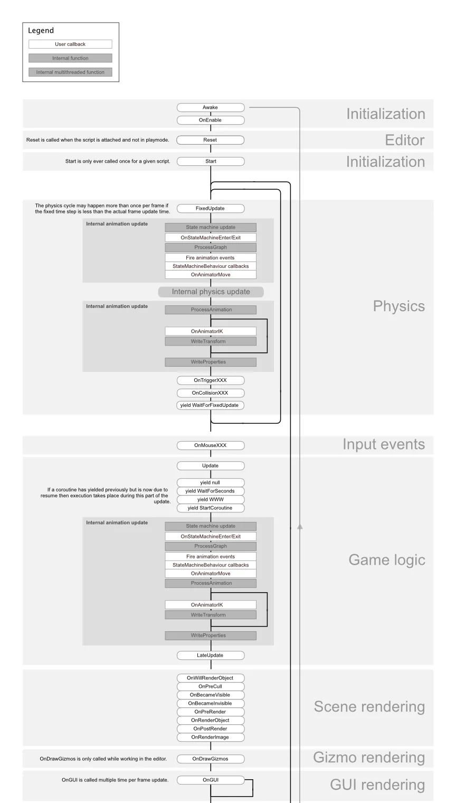
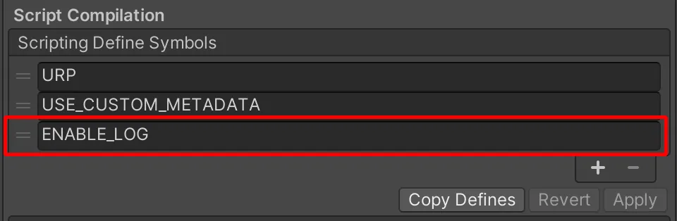
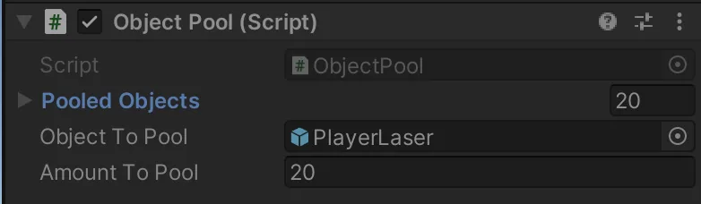
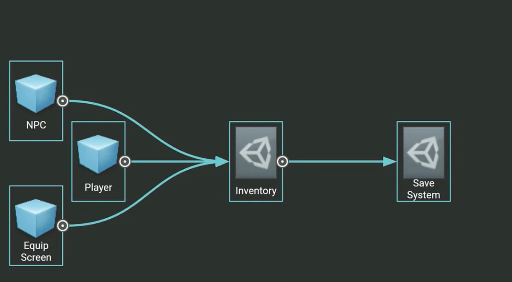

编程与代码架构（Programming and Code Architecture）
Unity 的 PlayerLoop（播放器循环）包含一系列用于与游戏引擎核心交互的函数。这个树状结构包含多个系统，负责处理初始化与逐帧更新。你的所有脚本都将依赖这个 PlayerLoop 来实现玩法逻辑。
进行性能分析时，你会在 PlayerLoop 下看到项目中的所有用户代码（编辑器组件的代码则位于 EditorLoop 下）。



理解 Unity PlayerLoop
请务必理解 Unity 帧循环的执行顺序。每个 Unity 脚本都会按照预先确定的顺序运行若干个事件函数。你应当弄清楚 Awake、Start、Update 以及其他构成脚本生命周期（lifecycle）的函数之间的区别。你可以利用 Low-Level API 向播放器的更新循环中添加自定义逻辑。
关于事件函数具体的执行顺序，请参阅 Script Lifecycle Flowchart（脚本生命周期流程图）。
尽量减少每帧运行的代码
先想一想某段代码是否真的必须每帧运行。把不必要的逻辑从 Update、LateUpdate 和 FixedUpdate 中移出去。这些事件函数确实是放置「必须每帧更新」的代码的便利位置，但请把任何不需要以该频率更新的逻辑提取出来。只要有可能，就只在事物发生变化时才执行逻辑。
如果你确实需要使用 Update，可以考虑让代码每 n 帧运行一次。这是实现时间切片（time slicing）的一种方式，而时间切片是把繁重的工作负载分摊到多帧上的常用技术。在下面这个示例中，我们每三帧运行一次 ExampleExpensiveFunction：
private int interval = 3;
void Update()
{
if (Time.frameCount % interval == 0)
{
ExampleExpensiveFunction();
}
}更好的做法是：如果 ExampleExpensiveFunction 是对某一组数据执行某种操作，可以考虑使用时间切片，让每帧处理这组数据中不同的一个子集。每帧只完成 1/n 的工作、而不是每 n 帧一次性完成全部工作，最终得到的性能表现会更稳定、更可预测，而不会出现周期性的 CPU 峰值。
避免在 Start/Awake 中执行繁重逻辑
当你的第一个场景加载时，会针对每个对象调用以下函数：
- Awake
- OnEnable
- Start
在应用程序渲染出第一帧之前，避免在这些函数中执行开销昂贵的逻辑。否则，你可能会遇到本可避免的、更长的加载时间。关于第一个场景加载的细节，请参阅事件函数的执行顺序说明。
避免空的 Unity 事件
即便是空的 MonoBehaviour 也需要占用资源，因此你应当删除空白的 Update 或 LateUpdate 方法。
如果你只是用这些方法做测试，请使用预处理指令（preprocessor directive）：
#if UNITY_EDITOR
void Update()
{
}
#endif这样，你就可以在编辑器中随意使用 Update 进行测试，而不会让不必要的开销混入你的构建版本。
移除 Debug.Log 语句
日志语句（尤其是在 Update、LateUpdate 或 FixedUpdate 中）会拖慢性能。在制作构建版本之前，请禁用你的 Log 语句。
为了更轻松地做到这一点，可以考虑配合预处理指令创建一个 Conditional 特性（Conditional attribute）。例如，创建这样一个自定义类：
public static class Logging
{
[System.Diagnostics.Conditional("ENABLE_LOG")]
static public void Log(object message)
{
UnityEngine.Debug.Log(message);
}
}用你的自定义类来生成日志消息。如果你在 Player Settings 中禁用 ENABLE_LOG 预处理器，那么你所有的 Log 语句就会一下子全部消失。
同样的做法也适用于 Debug 类的其他用途，例如 Debug.DrawLine 和 Debug.DrawRay。这些方法同样只应在开发期间使用，并且可能会对性能产生显著影响。
使用哈希值代替字符串参数
Unity 在内部并不使用字符串名称来访问 animator、material 和 shader 的属性。为了速度，所有属性名称都会被哈希成属性 ID（property ID），实际用于访问属性的正是这些 ID。
在 animator、material 或 shader 上使用 Set 或 Get 方法时，请使用接受整数参数的方法，而不是接受字符串参数的方法。字符串方法实际上只是先执行一次字符串哈希，然后把哈希得到的 ID 转发给接受整数参数的方法。
使用 Animator.StringToHash 处理 Animator 的属性名称，使用 Shader.PropertyToID 处理 material 和 shader 的属性名称。在初始化阶段获取这些哈希值，并缓存到变量中，以便在需要把它们传给 Get 或 Set 方法时使用。
选择合适的数据结构
当你在每帧中迭代成千上万次时，数据结构的选择会对效率或低效产生累积性的影响。对于你的集合，使用 List、Array 还是 Dictionary 更合理？在挑选正确结构的一般性指导方面，可以参考 MSDN 的 C# 数据结构指南。
避免在运行时添加组件
在运行时调用 AddComponent 是有一定开销的。每当在运行时添加组件时，Unity 都必须检查是否存在重复组件或其他必需的组件。实例化一个已经配置好所需组件的 Prefab 通常性能更好。

缓存 GameObject 和组件
GameObject.Find、GameObject.GetComponent 以及 Camera.main（在 2020.2 之前的版本中）都可能开销昂贵，因此要避免在 Update 方法中调用它们。取而代之，应在 Start 中调用并缓存结果。
例如，下面演示了对 GetComponent 的重复调用这一低效用法：
void Update()
{
Renderer myRenderer = GetComponent<Renderer>();
ExampleFunction(myRenderer);
}只调用一次 GetComponent 会更高效，因为函数的结果被缓存了下来。这个缓存的结果可以在 Update 中重复使用，而无需再次调用 GetComponent。
private Renderer myRenderer;
void Start()
{
myRenderer = GetComponent<Renderer>();
}
void Update()
{
ExampleFunction(myRenderer);
}使用对象池
Instantiate 和 Destroy 会产生垃圾，并引发垃圾回收（garbage collection, GC）尖峰，而且整个流程通常较慢。
请在游戏中 CPU 尖峰不太容易被察觉的时机（例如菜单界面期间）创建这些可复用的实例。用一个集合来跟踪这个对象「池」。在游戏玩法进行期间，需要时启用下一个可用的实例，用禁用对象代替销毁对象，并把它们归还到池中。
这样就能减少项目中的托管内存分配次数，并可以避免垃圾回收方面的问题。
在此处了解如何在 Unity 中创建一个简单的对象池（object pooling）系统。你也可以查看 Unity 提供的这些代码示例，它们使用对象池来为你自己的游戏开发提供参考。
使用 ScriptableObject
把不会变化的值或设置存放到 ScriptableObject 中，而不是存放在 MonoBehaviour 中。ScriptableObject 是一种存在于项目内部的资源，你只需要设置一次。它不能被直接挂载到 GameObject 上。
MonoBehaviour 会带来额外的开销，因为它需要一个 GameObject——以及默认情况下的一个 Transform——来作为宿主。这意味着在存储单个值之前，你就需要创建大量用不到的数据。ScriptableObject 去掉了 GameObject 和 Transform，从而缩小了这部分内存占用。它还把数据存储在项目层级，如果你需要从多个场景访问同一份数据，这会很有帮助。
一个常见的用例是：有许多 GameObject 依赖于同一份在运行时不需要变化的重复数据。与其让每个 GameObject 都保有一份这样的本地重复数据，不如把它集中到一个 ScriptableObject 中。然后，每个对象只存储一个指向共享数据资源的引用，而不是复制数据本身。在拥有数千个对象的项目中，这可以带来显著的性能提升。
在 ScriptableObject 中创建字段来存储你的值或设置，然后在你的 MonoBehaviour 中引用这个 ScriptableObject。
使用 ScriptableObject 中的这些字段，可以避免每次用该 MonoBehaviour 实例化对象时都要重复复制数据。
在软件设计中，这是一种被称为享元模式（flyweight pattern）的优化手法。用 ScriptableObject 以这种方式重构代码，可以避免大量值的复制，并减少你的内存占用。
观看这个 Introduction to ScriptableObjects 开发日志，了解 ScriptableObject 如何为你的项目带来收益。你也可以在此处找到相关文档，或查阅我们的技术指南 Create modular game architecture in Unity with ScriptableObjects。
要了解更多在 Unity 中使用设计模式的知识，请参阅电子书《Level up your code with game programming patterns》，进一步了解如何使用设计模式。